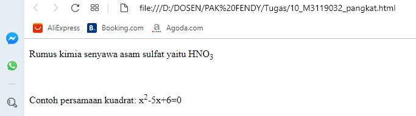

Superscript & Subscript
Pada HTML teks berukuran kecil yang terletak di bawah atau di atas garis nomal disebut dengan
subscript dan superscript.
Codingan
<!DOCTYPE html>
<html>
<head>
<title>Superscript & Subscript</title>
</head>
<body>
<p>
Rumus kimia senyawa asam sulfat yaitu
HNO<sub>3</sub>
</p>
<br/>
<p> Contoh persamaan kuadrat:
x<sup>2</sup>-5x+6=0
</p>
</body>
</html>
Hasil codingan

Analisis
pada codingan diatas menggunakan Superscript & Subscript, untuk superscript seperti contoh persamaan kuadrat
sedangkan subscript pada rumus kimia diatas.
Back